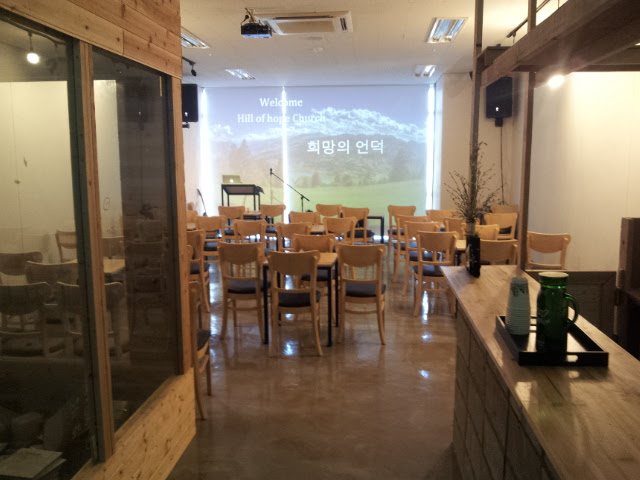

송도교회 발자취
하나님의 인도하심 속에 이뤄낸 헌신과 기적의 순간들입니다

2000만원으로 개척교회 도전
2013년 5월에 송도신도시에 보증금 1000만원과 직접 청년들과 목회자들의 헌신으로 약 800만원의 셀프 인테리어로 오른쪽 사진의 교회가 완성되었습니다.
기적의 첫 16명의 침례식
2013년 10월 성경공부와 전도회를 통하여 16명의 소중한 영혼들이 주님의 자녀로 거듭난 첫번째 개척교회가 되었습니다.

인터넷 선교 교회를 거듭남
코로나의 위기속에서 해외선교인터뷰와 실시간 방송예배와 다양한 유튜브 프로그램으로 인터넷 방송 교회로 전 세계에 복음을 전파하고 있습니다.